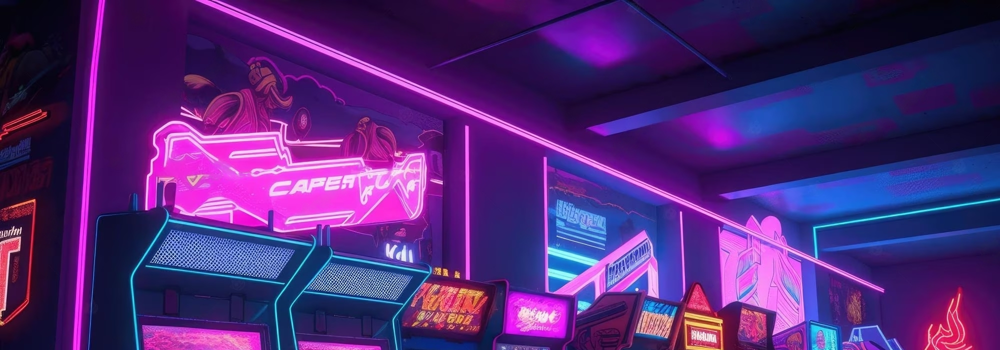

Os jogos eletrônicos têm percorrido um longo caminho desde seus primórdios modestos. Ao longo das décadas, eles passaram por uma incrível evolução tecnológica e cultural, tornando-se uma forma de entretenimento imensamente popular em todo o mundo. Desde os jogos simples baseados em texto até as experiências imersivas em realidade virtual, a indústria dos jogos eletrônicos continua a nos surpreender com sua capacidade de inovação e criatividade. Neste portal, exploraremos essa fascinante jornada, desde os primeiros passos até as marcas revolucionárias alcançadas pelos jogos eletrônicos de hoje.